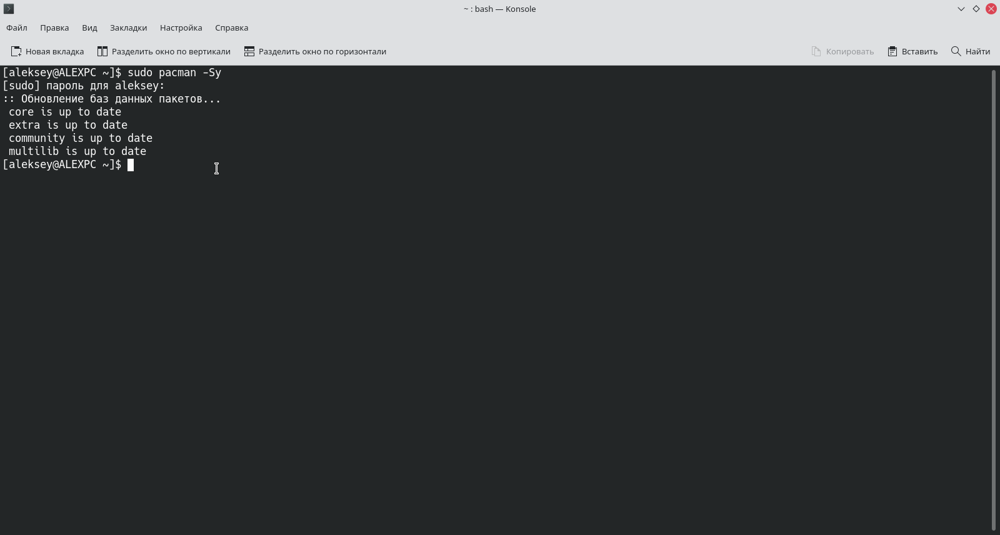

В разных дистрибутивах существует несколько разных графических менеджеров пакетов. В Arch Linux и его производных используют Pamac.
Открываем Pamac.
Выбираем программу иcпользуя фильтры или введя название в строку поиска (можно отметить сразу несколько). Нажимаем кнопку "Применить".
Выберем необязательные компоненты.
Введём пароль.
Будет показана информация об устанавливаемых пакетах. Нажимаем применить.
Программа установлена.
В различных дистрибутивах для установки пакетов используются менеджеры пакетов.
В Arch Linux установка программ выполняется с помощью Pacman.
Откроем терминал и введём команды для установки.
Обновим список пакетов, на всякий случай.
$ sudo pacman -Sy

Установим пару программ.
Для этого используем команду:
$ sudo pacman -S название_пакета1 название_пакета2 ...
(можно устанавливать несколько пакетов сразу.)

В Arch Linux кроме официальных репозитариев существует еще пользовательский репозитарий AUR. Pacman не умеет напрямую
устанавливать пакеты из AUR, поэтому используются помощники или же пакеты устанавливаются вручную.
1. Установка из AUR без помощника.
Для начала перейдем в AUR.
И воспользуемся поиском нужного нам пакета.
Скопируем URL для git clone
В терминале составим команду $ git clone скопированная_ссылка
После окончания клонирования перейдём в директорию клонированного пакета
$ cd имя_пакета
Для сборки и установки запустим следующую команду:
$ makepkg -si
2. Установка и из AUR при помощи помощника.